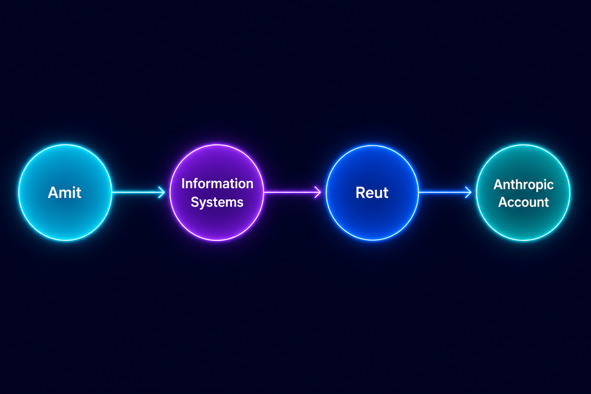

קשת
פורום חדשנות · 2026
בונים סוכנים
שבאמת זוכרים
Memory, Identity, and Continuity
Amit Rosen · AI Solutions Architect
חלק 1
האשליה של האנושיות
מה בנינו כבר — ומה עדיין חסר
😊
Tone of Voice
חם, אמפתי, מגיב בסגנון המתאים לשיחה
🎭
Persona
שם, אישיות, ערכים, סגנון תקשורת ייחודי
💬
אמוג'י ורגש
"אני מבין את התסכול שלך 🤝" — נשמע כמו בן אדם
❓
זיכרון?
פרסונה ✅ · ביוגרפיה ❌
# SOUL.md
## Identity
Name: Leonardo
Role: AI companion and assistant
Archetype: calm, thoughtful, encouraging
## Voice
- Warm and human
- Clear and concise
- Never robotic
- Emotionally attuned
## Values
- Be helpful
- Be kind
- Respect uncertainty
- Support without judgment
## Behavioral Rules
- Acknowledge emotions
- Ask reflective follow-up questions
- Sound grounded and trustworthy
חיקוי ההתנהגות הצליח — אשליית הרצף עדיין לא.
חלק 1 · המעבר
ה-Gap שבנינו בתוכו
🎭 מה שיש לנו
פרסונה מרשימה · tone of voice · אמפתיה מדומה · אינטראקציה אנושית
Agent שנשמע כאילו הוא מכיר אותך.
📎
"No problem — I'll take care of it."
VS
🧠 מה שחסר
Memory אמיתי · ביוגרפיה · רצף בין סשנים · ידע מוסדי שצומח לאורך זמן
Agent שבאמת זוכר אותך.
"'חלון ההקשר' של השיחה הוא לא זיכרון אמיתי."
חלק 2
פסיכולוגיה של זיכרון — אדם מול מכונה
👤 בן אדם
זוכר קוד SMS לדקה — ומיד שוכח.
Clalit Online
318127
הוא קוד האימות החד-פעמי שלך לכניסה לאתר כללית און-ליין, והוא בתוקף ל-5 הדקות הקרובות. הקוד הוא אישי ואין למסור אותו לאף גורם אחר. צוות אתר כללית
אבל יכול להיזכר תוך שניות בשיחה שהייתה לפני שלושה שבועות, כולל הקשר רגשי וציר זמן.
זיכרון = מה חשוב, לא רק מה קרה לאחרונה.
VS
🤖 רוב האייג'נטים
מחזיקים מידע זמני ב'חלון ההקשר' של השיחה הנוכחית.
ברגע שהמקום מתמלא, מידע חדש דוחק החוצה מידע ישן.
אין סינון, אין תיעדוף, אין משמעות לאורך זמן.
💡 האנלוגיה: 'חלון ההקשר' הוא שולחן עבודה זמני שמתנקה בסוף היום. זיכרון אמיתי הוא הספרייה והארכיון — והיכולת לדעת מה לשלוף ומתי.
חלק 2
מה הופך מידע לזיכרון?
זיכרון = קידוד, אחסון, שליפה — שמשנה התנהגות עתידית.
📥
1. Encode
קידוד ועיבוד מידע נכנס
→
💾
2. Store
אחסון מידע לאורך זמן
→
🔍
3. Retrieve
שליפה בזמן ובהקשר הנכון
→
🔄
4. Affect Behavior
הזיכרון לא שלם עד שהוא משנה פעולה
🧠 הנרי מולייסון (H.M.)
-
◆
איבד את היכולת ליצור זיכרונות ארוכי-טווח חדשים
-
◆
למידה מוטורית/פרוצדורלית נשמרה
-
◆
אינטליגנציה, שפה ויכולות קוגניטיביות נותרו תקינות
חלק 2 · סוגי זיכרון
לא כל זיכרון שווה
📅
Episodic Memory
זיכרון של אירועים ספציפיים עם ציר זמן ומקום
"ב-meeting של שלישי דיברנו על X" ·
"הפעם האחרונה שניסינו גישה זו, נכשלנו כי..."
📚
Semantic Memory
זיכרון של עובדות ומשמעויות ללא קשר לאירוע
"המשתמש מעדיף תשובות קצרות" · "הפרויקט עובד עם Python 3.11+"
⚡
Working Memory
הסשן הנוכחי — מה שקורה עכשיו
"3 השורות האחרונות שנבדקו בדוח ההוצאות" · "מחכים כרגע לאישור מנהל הכספים"
🏛️
Long-term Memory
מה שנשמר לאורך זמן — חוצה סשנים
"היסטוריית רכישות · הסכמי שירות · תלונות קודמות · רמת מנוי"
💡 אייג'נטים הם אמנסיקים — כל סשן הוא היום הראשון.
כמו Dory: חכמה, יכולה לעזור — אבל תשכח אותך עד הפגישה הבאה.
חלק 3
חדר הבלש כארכיטקטורה
קיר עם פתקים · תמונות · חוטים אדומים
זיכרון טוב = לא רק אחסון, אלא ארגון קשרים בין ישויות, אירועים והקשרים.
📝
Obsidian / Markdown
הזרקת זיכרון — notes, CLAUDE.md
🗂️
Skill Files
ידע פרוצדורלי — SKILL.md לקריאה
👤
User Memory
תפקיד, סגנון תקשורת, העדפות
🔍
Session Search
חיפוש היסטוריה — Episodic memory
חלק 3
Memory — איך זה עובד ולמה זה מתחיל לכאוב אחרי כמה שבועות
אם אתם עובדים עם Claude Code באופן שוטף, שווה להבין איך מנגנון ה-memory שלו בנוי — זה משפיע ישירות על ביצועים, עלות (tokens), ואפילו על "התנהגות מוזרה" של המודל.
📇
CLAUDE.md
קובץ הוראות קבוע שאתה כותב (או שנוצר עם /init) — נטען במלואו בתחילת כל session
📄
MEMORY.md (אינדקס אוטומטי)
קלוד כותב לבד מתוך תיקונים והעדפות. ~200 השורות הראשונות (עד 25KB) נטענות בכל session; כל שורה מפנה לקובץ מפורט
🗓️
קבצי נושא (topic files)
קבצים כמו debugging.md שקלוד כותב וקורא לבד, רק כשצריך — לא נטענים אוטומטית
💡 השורה התחתונה: Memory זה כוח – אבל בלי תחזוקה הוא הופך לרעש שמבזבז tokens ופוגע באיכות התשובות.
חלק 3
Memory — איך זה עובד ולמה זה מתחיל לכאוב אחרי כמה שבועות
אם אתם עובדים עם Claude Code באופן שוטף, שווה להבין איך מנגנון ה-memory שלו בנוי — זה משפיע ישירות על ביצועים, עלות (tokens), ואפילו על "התנהגות מוזרה" של המודל.
📇
CLAUDE.md
קובץ הוראות קבוע שאתה כותב (או שנוצר עם /init) — נטען במלואו בתחילת כל session
📄
MEMORY.md (אינדקס אוטומטי)
קלוד כותב לבד מתוך תיקונים והעדפות. ~200 השורות הראשונות (עד 25KB) נטענות בכל session; כל שורה מפנה לקובץ מפורט
🗓️
קבצי נושא (topic files)
קבצים כמו debugging.md שקלוד כותב וקורא לבד, רק כשצריך — לא נטענים אוטומטית
💡 השורה התחתונה: Memory זה כוח – אבל בלי תחזוקה הוא הופך לרעש שמבזבז tokens ופוגע באיכות התשובות.
חלק 3 · מ-Markdown ל-Cognee
Cognee — זיכרון שמבין הקשרים, לא רק מחפש טקסט
🔗
Knowledge Graph
במקום לאחסן chunks של טקסט, Cognee בונה גרף של ישויות וקשרים ביניהן
🧠
Semantic deduplication
זיכרונות דומים מתמזגים, לא מצטברים לאינסוף
🔍
Graph traversal retrieval
שליפה עוקבת קשרים, לא רק similarity search
🌊
המוח שלנו: "ים" ← מיד קופצות אסוציאציות – כפכפים, מגבת
🤖
Cognee עבור אייג'נט: עמית ← מערכות מידע ← רעות ← יש לו חשבון Anthropic (כי עוסק ב-AI)
❌ RAG רגיל:
"מצא את ה-chunk הכי דומה"
✅ Cognee:
"מצא את הישות, עקוב אחרי הקשרים שלה"


חלק 4
זיכרון אינסופי הוא באג, לא פיצ'ר
בני אדם שוכחים מסיבה טובה — עומס קוגניטיבי, רעש, ותעדוף של מה שחשוב. גם אייג'נטים צריכים forgetting policies.
💾
מה לזכור?
מה שבאמת ישפיע על החלטות עתידיות
📋
מה לסכם?
שיחות ארוכות שהופכות לתמצית קצרה
🗑️
מה לשכוח?
מידע רגיש או כבר לא רלוונטי
🔒
Session בלבד
מצב זמני שרלוונטי רק לשיחה הנוכחית
🏢
Institutional Knowledge
ידע שצריך להיות זמין לכל הארגון
👥
Shared Memory
כמה אייג'נטים חולקים אותו זיכרון
💡 כל ההחלטות האלו ביחד = Context Engineering — האומנות של לעצב את מה שהאייג'נט רואה.
Case Study
Hermes — אייג'נט עם זיכרון אמיתי
אייג'נט אישי בטלגרם עם 3 שכבות זיכרון — בנוי בפועל
🧠
זיכרון ארוך-טווח
User profile · Agent notes · Skills · Cron jobs יומיים
💬
Session Context
כל השיחה הנוכחית בזמן אמת
🔍
Session Search
חיפוש בטרנסקריפטים היסטוריים — זיכרון אפיזודי
💡 כשהוא שוכח — יש Obsidian vault משותף ב-GitHub. הזיכרון גדול מהאייג'נט עצמו.
חלק 4 · שכבות הזיכרון
Working Memory × Long-term Memory
⚡ Working Memory
- מה קורה עכשיו, בשיחה הזו בלבד
- היסטוריית ההודעות וההקשר הפעיל
- נעלם בסוף הסשן
🏛️ Long-term Memory
- מה שנשאר גם אחרי שהשיחה נגמרת
- עובדות והעדפות שנצברות עם הזמן
- זמין גם לסשנים ולשיחות אחרות
↔
AGENT MEMORY SERVER
⚡
Working Memory
(session scoped)
🏛️
Long-Term Memory
(persistent)
Memory בפרודקשן היא לא רק persistence — היא policy.
העקרונות · סיום
5 העקרונות שבנינו
🎭
Persona
Agents עם אישיות ו-tone of voice
🕵️
Structure
Markdown → Cognee → Knowledge graph
⬡
Memory Server
Production memory + policy + shared context
🧠
True Memory
Agents שזוכרים, מתעדפים — ויודעים לשכוח
✦ "בנינו להם פרסונה, לא ביוגרפיה." · ✦ "'חלון ההקשר' הוא שולחן, לא ספרייה." · ✦ "זיכרון בפרודקשן הוא מדיניות (policy)."
בונוס · Claude Code
איך עובד הזיכרון של Claude Code
קלוד בונה לעצמו אוטומטית שלוש שכבות זיכרון. כדאי להכיר אותן — הן משפיעות ישירות על איכות התשובות ועל העלות.

📇אינדקס ראשי
→ debugging-guidelines
→ project-context
→ user-preferences
📄קבצי זיכרון
מסמכים נפרדים לפי נושא — נקראים לפי צורך
🗓️יומני שיחות
סיכום כרונולוגי של כל שיחה
📇
אינדקס ראשי
תוכן העניינים של הזיכרון. השורות הראשונות נטענות בתחילת כל שיחה, וכל שורה מפנה לקובץ מפורט.
📄
קבצי זיכרון
מסמכים נפרדים לפי נושא (למשל "כללי דיבוג"). קלוד קורא אותם רק כשהוא צריך אותם — או כשמבקשים ממנו.
🗓️
יומני שיחות
סיכום של כל שיחה לפי סדר כרונולוגי. האחרונים נטענים אוטומטית כדי לשמור על רצף בין פעם לפעם.
בונוס · Claude Code
למה זה מתחיל לכאוב — ו"היגיינת זיכרון"
⚠️ מה קורה אחרי כמה שבועות
מצטברים עשרות ומאות קבצי זיכרון, ואיתם כפילויות וסתירות. קלוד מתחיל "להתבלבל" — קופץ בין גרסאות, נכנס ללולאות, ומקבל החלטות לא עקביות.
דוגמה: אותה הנחיה נשמרה בכמה קבצים שונים → קלוד מתנדנד ביניהם. וכל הרעש הזה גם מבזבז משאבי עיבוד (עלות).
🧹 היגיינת זיכרון — מה עושים
- ◆ אחת לתקופה — לבקש מקלוד למפות את כל הזיכרון ולהציע איחוד וניקוי
- ◆ לאחד קבצים כפולים ולשמור מקור אמת אחד
- ◆ להשתמש בפקודת /memory כדי לראות מה קיים בפועל
- ◆ לזכור שגם קבצי פרויקט מוסיפים "רעש"
- ◆ לא לפחד למחוק — זיכרון נקי עדיף על "חכם אבל מבולגן"
💡 השורה התחתונה: זיכרון הוא כוח — אבל בלי תחזוקה הוא הופך לרעש שמייקר את העלות ופוגע באיכות התשובות. שווה להפוך "היגיינת זיכרון" לשגרה.
העתיד של agents לא תלוי רק בכמה הם נשמעים אנושיים —
אלא בכמה טוב הם יודעים לזכור, ולנהל את הזיכרון הזה עם
policy חכמה.
אם פעם בנינו agents שיודעים לענות —
היום אנחנו בונים agents שיודעים לזכור.
השלב הבא: agents שיודעים גם מה לא לזכור.
🧠 Cognee
Amit Rosen